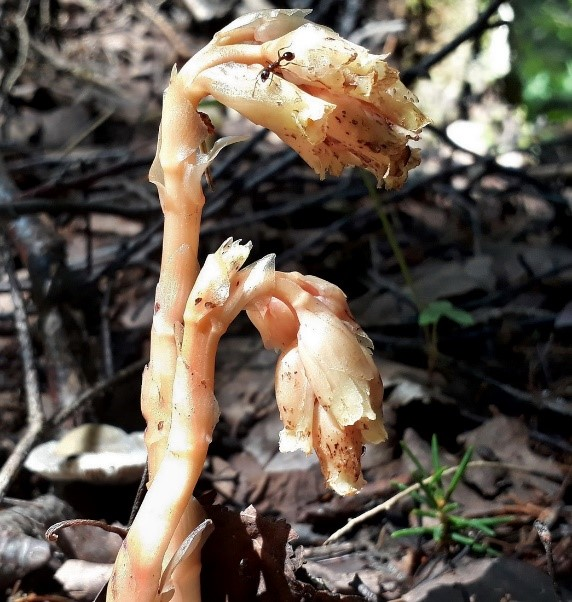

|

Многолетнее травянистое растение. Листья чешуевидные, мясистые, жёлтого цвета, либо простые; форма листа — треугольная,
удлинённая или яйцевидная, верхушка листа округлая, основание усечённое. Соцветие кистевидное.
Цветки размером 1—2 см с четырьмя или пятью лепестками белого или жёлтого цвета с оттенками. Плод — коробочка бурого цвета.
Фотограф: Лида Онищенко |